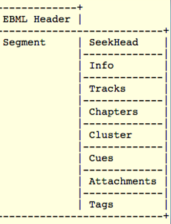

MKV es un formato contenedor, lo que significa que permite embeber múltiples secuencias de archivos en uno
solo, usualmente junto con metadatos que las identifican
MKV hace referencia a una de las posibles extensiones que pueden tener los archivos “Matroska Multimedia
Container”, otras posibles extensiones son:
MKV es un formato construido sobre EBML (Extensible Binary Meta Language), un tipo de archivo formulado como
una extensión binaria de XML, y sigue el mismo modelo separando sintaxis y semántica. Esto posibilita que
una biblioteca genérica EBML pueda leer cualquier formato que se funde en ella.
Al contar con EBML como base, Matrioska tiene una alta flexibilidad, y admite prácticamente cualquier
formato de audio y video.
Cada archivo Matroska contiene dos elementos raíz, la cabecera y uno o múltiples segmentos, sin embargo, no
es común usar más de un segmento.
